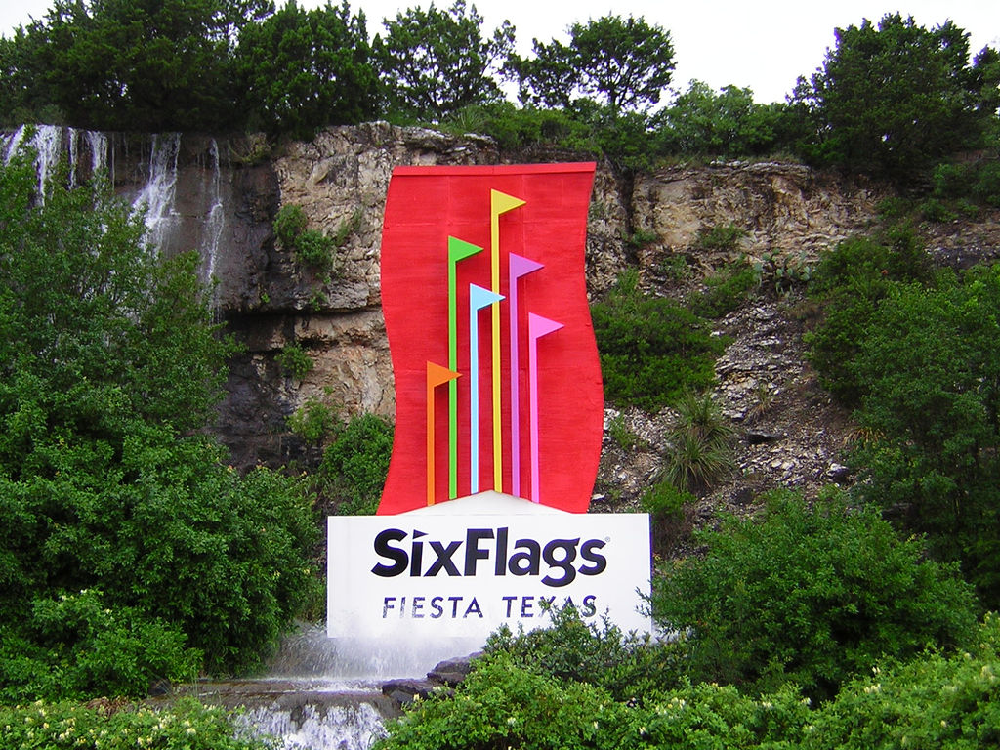

sanAntonio
Welcome to sanAntonio
Welcome to sanAntonio



White Water Bay can be entered from Crackaxle Canyon. The water park is home to 15 water slides and attractions such as the newest slides, Bahama Blaster, added in 2014. White Water Bay opened with the park in 1992 as the Ol' Waterin' Hole. It was renamed Armadillo Beach in 1999, then renamed again in 2006 to White Water Bay. The water park is included with park admission. The newest addition to White Water Bay is Thunder Rapids, a water slide-roller coaster hybrid, which opened in 2017.